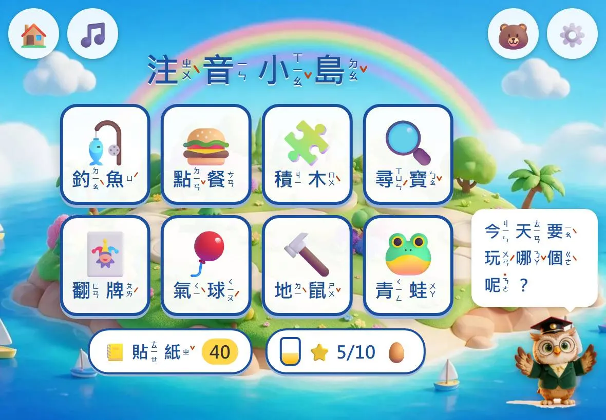
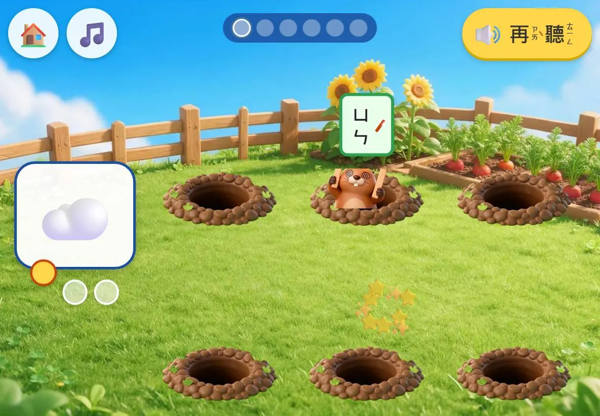
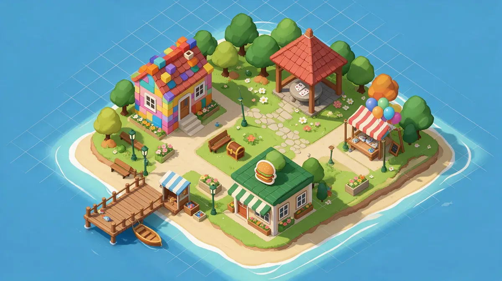
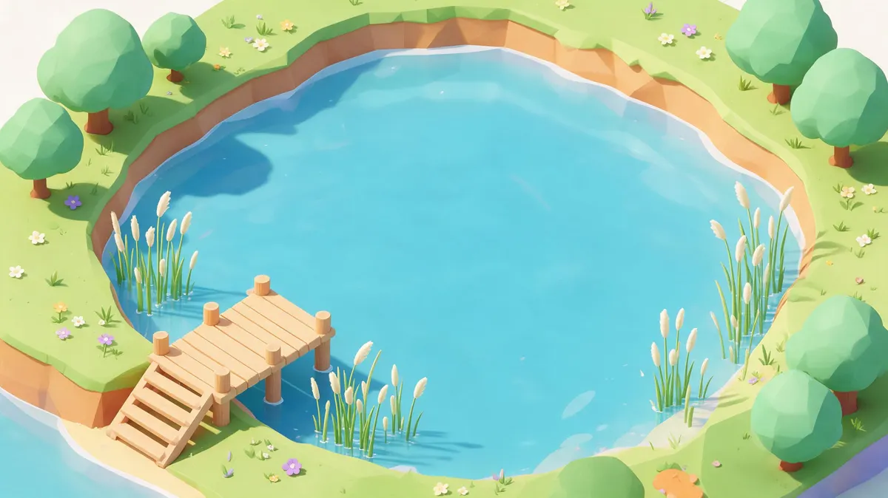
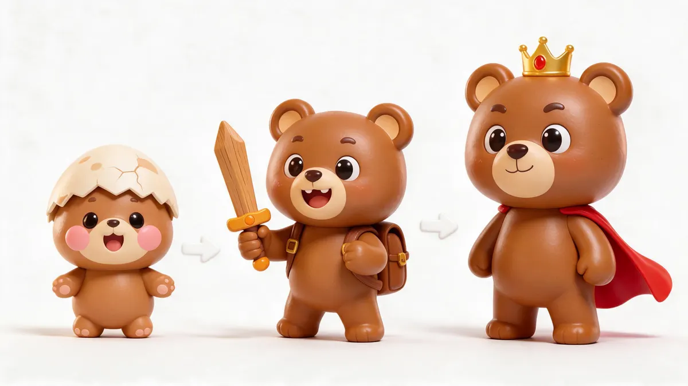
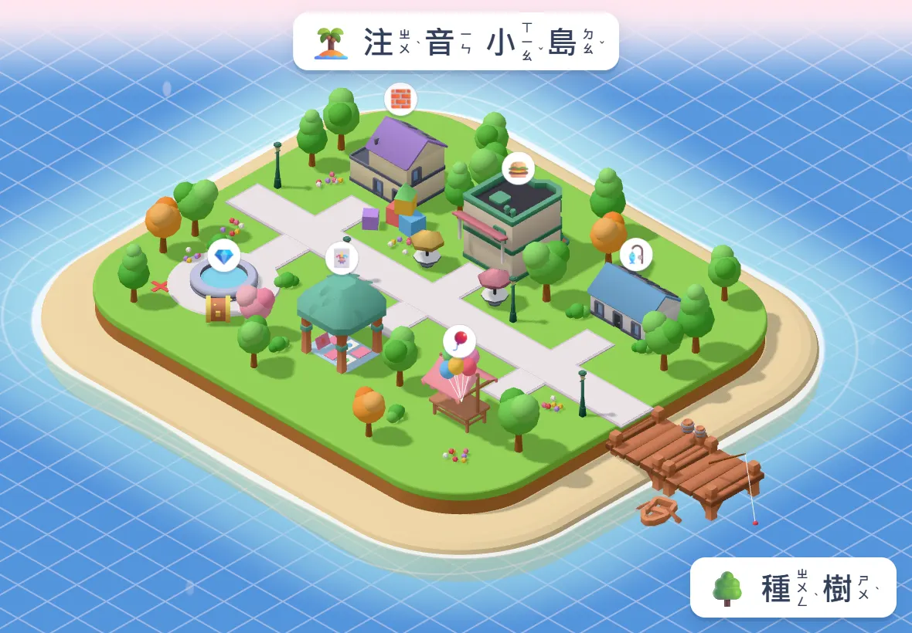
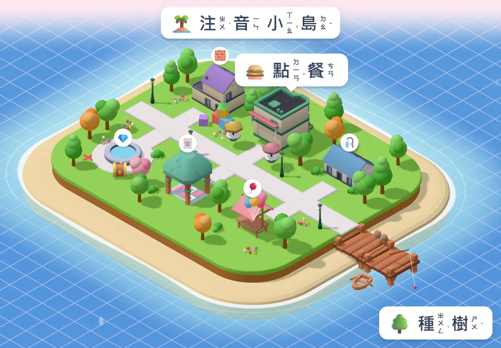

🏝️ 注音小島：美術風格三選一
你傳的「佈置小鎮」那種斜上方俯視的小鎮風，有兩條路能全自動做出來（B、C），另外 A 是維持現在的樣子。下面都是這次實際做出來的樣品，不是網路找的圖。
A 維持現在（盲盒 3D 風）不用改


- ✅ 馬上能用，零工
- ➖ 跟你傳的小鎮圖不像
B AI 生圖的等角小鎮風推薦用在：遊戲畫面＋寵物進化



- ✅ 跟你的參考圖最像
- ✅ 寵物進化圖可以用同一套畫風生
- ✅ 全自動：我用小雲雀生圖、自己去背、自己接進遊戲
- ➖ 圖是平面的，不能轉、不能讓小孩自己擺東西
- ➖ 全部換要生約 40–60 張圖（一兩天的工）
C 真的 3D 小島推薦用在：「佈置小島」獎勵


- ✅ 小孩可以自己種樹、擺房子（就像你的參考圖「種一排樹／撒點花」）
- ✅ 素材是 Kenney 免費 3D 積木（可商用）
- ➖ 積木感比較重，沒有 B 那麼可愛
- ➖ 很舊的平板會比較吃力
我的建議：B ＋ C 混搭。遊戲畫面和寵物用 B；星星換來的「佈置小島」用 C。你選好之後，我再一次把全部畫面換掉。